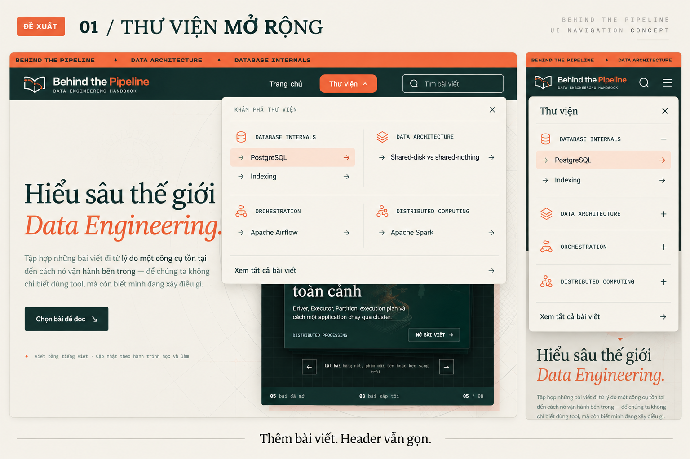
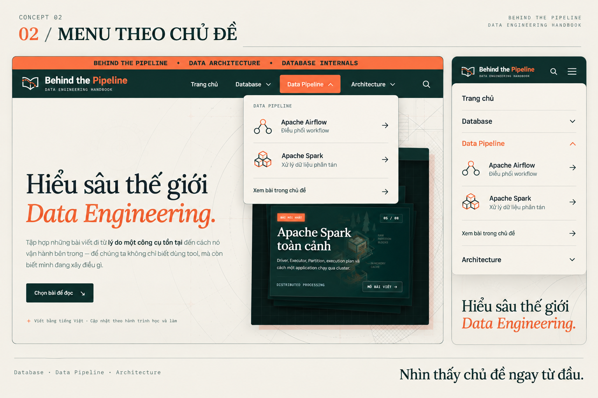
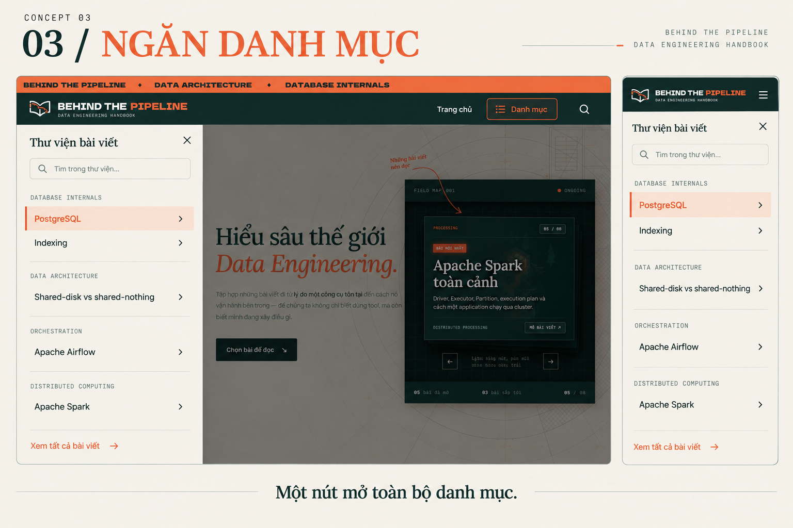

Thư viện mở rộng
Header giữ ba mục cố định. Bấm Thư viện để mở bảng bài viết theo nhóm. Khi có nhiều bài hơn, mỗi nhóm dẫn tới danh sách đầy đủ trong thư viện.

Tải hình mẫu 01 ↗Menu theo chủ đề
Hiển thị ba nhóm lớn: Database · Data Pipeline · Architecture. Dễ thấy ngay website viết về gì; số nhóm cấp cao cần được giữ ổn định khi thư viện tăng.

Tải hình mẫu 02 ↗Ngăn danh mục
Một nút Danh mục mở ngăn bên cạnh, có tìm kiếm và danh sách nhóm bài. Hợp nếu bạn ưu tiên header thật thoáng; ngăn chiếm một phần màn hình khi mở.

Tải hình mẫu 03 ↗